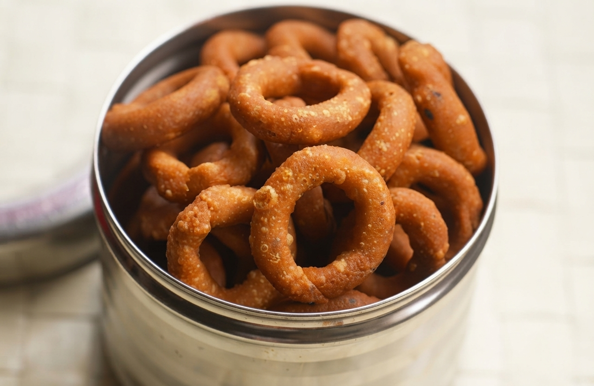
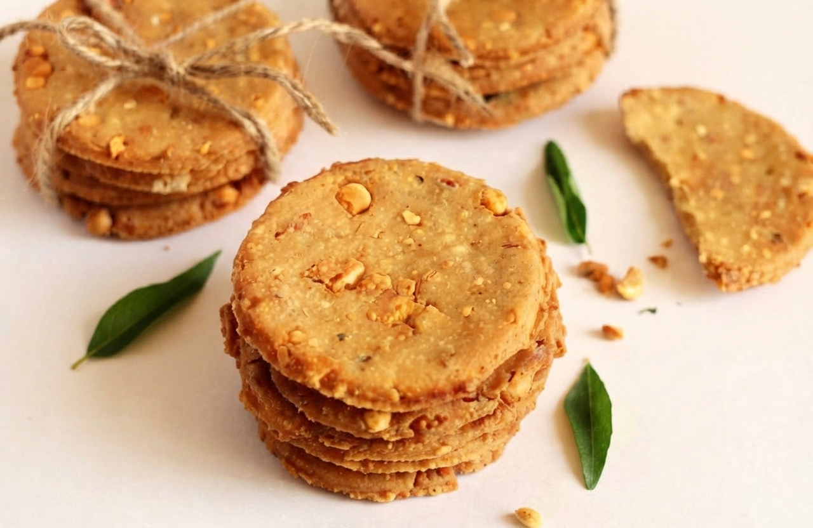
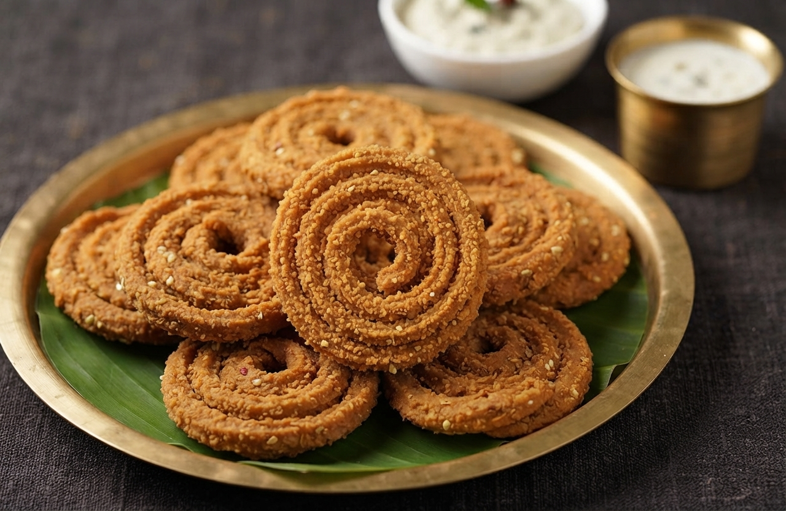

Maddur Vada
Mangalorean Fish Curry is a beloved coastal Karnataka specialty featuring fresh fish simmered in a bold, tangy gravy made with coconut, red chillies, and tamarind, best enjoyed with steamed rice.
Ingredients
- 1 cup rice flour
- ½ cup maida (all-purpose flour)
- 1 large onion, finely chopped
- 2 green chillies, chopped
- 2 tbsp chopped coriander
- 1 tsp cumin seeds
- Curry leaves, salt
- Oil for deep frying
Instructions
- Mix rice flour, maida, onions, chillies, coriander, cumin, curry leaves, and salt.
- Add hot water gradually and mix to form a stiff dough (not soft).
- Take small portions and flatten into thick discs with oiled hands.
- Heat oil for deep frying on medium heat.
- Fry vadas until golden brown and crispy on both sides.
- Drain on paper towels. Serve hot with coconut chutney.

Kodubale
Kodubale is a crunchy, ring-shaped Karnataka snack made from rice flour, roasted gram, and coconut, celebrated for its satisfying crunch and savory spice blend.
Ingredients
- 1 cup rice flour
- ¼ cup roasted gram flour (putnalu pindi)
- 2 tbsp grated coconut
- 1 tsp sesame seeds
- ½ tsp asafoetida
- 1 tsp chilli powder
- Salt to taste
- 2 tbsp butter or ghee
- Oil for deep frying
Instructions
- Mix rice flour, roasted gram flour, coconut, sesame, asafoetida, chilli powder, and salt.
- Add melted butter/ghee and rub into flour mixture.
- Add water gradually to form a firm dough.
- Take small portions and roll into thin ropes. Shape into rings by joining ends.
- Heat oil on medium-low heat. Fry kodubales until golden and crisp.
- Cool completely before storing in an airtight container.

Mangalore Buns
Mangalore Buns are soft, fluffy, and slightly sweet fried bread rolls from coastal Karnataka made with ripe bananas, flour, and yogurt, traditionally paired with coconut chutney.
Ingredients
- 2 very ripe bananas, mashed
- 2 cups all-purpose flour
- ½ cup yogurt
- 2 tbsp sugar
- ½ tsp baking soda
- Pinch of salt
- Oil for deep frying
Instructions
- Mash bananas thoroughly. Add yogurt, sugar, salt, and baking soda. Mix well.
- Add flour gradually and knead into a soft, sticky dough.
- Cover and rest for 4-6 hours (or overnight) until doubled.
- Pinch small portions and gently flatten into thick discs (do not roll thin).
- Fry on medium-low heat until puffed and golden brown on both sides.
- Serve warm with coconut chutney or banana jam.

Nippattu
Nippattu is a traditional, thin, and crunchy disc-shaped Karnataka snack made from rice flour, roasted gram, peanuts, and coconut, spiced with chillies and curry leaves.
Ingredients
- 1 cup rice flour
- ¼ cup roasted gram flour
- 2 tbsp roasted peanuts, crushed
- 2 tbsp grated coconut
- 1 tsp sesame seeds
- ½ tsp asafoetida
- 1 tsp chilli powder
- Curry leaves, salt
- 2 tbsp butter
- Oil for deep frying
Instructions
- Mix rice flour, roasted gram flour, peanuts, coconut, sesame, asafoetida, chilli powder, curry leaves, and salt.
- Add melted butter and rub into mixture.
- Add water gradually to form a firm dough.
- Roll out thinly on a floured surface. Cut into circles or diamond shapes.
- Fry on medium heat until crisp and lightly golden.
- Cool completely. Store in airtight container for up to 2 weeks.

Chakli
Chakli is a classic, spiral-shaped South Indian snack popular in Karnataka during festivals, crafted from a crunchy, golden-fried blend of rice flour, lentils, and spices.
Ingredients
- 1 cup rice flour
- ½ cup urad dal flour
- 2 tbsp roasted gram flour
- 1 tsp cumin seeds
- ½ tsp asafoetida
- 1 tsp chilli powder
- 2 tbsp butter
- Salt to taste
- Oil for deep frying
Instructions
- Mix rice flour, urad dal flour, roasted gram flour, cumin, asafoetida, chilli powder, and salt.
- Add melted butter and rub into flour mixture.
- Add water gradually to form a smooth, pliable dough.
- Fill chakli press/mold with dough. Press onto parchment paper in spiral shape.
- Carefully slide into hot oil. Fry on medium heat until golden and crisp.
- Drain and cool. Store in airtight container.